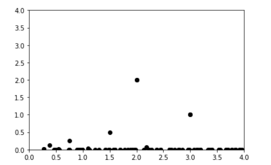
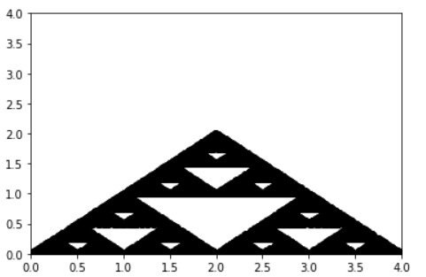

נראה שהקוד שלך לא מאוד רנדומלי, או ממש ממש לא אוהב את הנקודה 4,0
2 לייקים
גם אני חשבתי ככה בהתחלה, אז הרצתי עוד כמה פעמים ויוצא לי גם ככה:

לא סביר שעבור מאות או אלפי צעדים רק 5 פעמים תבחר את 2,2 
גם לי היה מוזר, אבל עובדה שהוא כן מגריל את כולם לפי התוצאה האחרונה (שהיא עם 100 הרצות)
מעבר לזה אני נתתי לו לבחור רנדומלית את ה-N פעמים שלו… לא יודע למה הוא מתעקש להישאר על אותם 2 כשהרנדומליות היא מתוך 3 
מנסה לבדוק ב-visualizer אם יש זיבה מיוחדת שהוא נתקע שלב שלב
לא משנה… עזבו הכל… פאדיחה מטומטמת בהחלט
ספוילר איך יוצא הציור

סה"כ מרגיש שזה נראה נכון יותר
אבל גם אני כמו מישהו למעלה לא השתמשתי בפונקציות קסם נוספות
לייק 1
תכניס את זה ל"הסתרת פרטים" וותרשום ספוילר.

שלום לכולם,
הצלחתי להגיע לתוצאה הרצויה עם פונקציה רגילה שכתבתי, מרגיש לי שהיא קצת איטית אבל זה פחות משמעותי לי כרגע, אני באמת לא מצליח להבין איך ולמה להשתמש במחלקה?
אשמח לכל הכוונה או הסבר.
תודה!!!
לייק 1
היי דרור,
הרעיון של מחלקה היא ליצור מאין “תבנית” עבור אובייקט שהולך להיות חזרתי.
מהסיבה שאם יש לנו מופע חוזר של אובייקט מסויים אנחנו בוודאי נרצה שתהיה לנו דרך לעשות שינוי
למשל בכל האובייקטים האלה ביחד.
נגיד הייתי עושה תכנית שמנהלת בית ספר, אז הייתי רוצה שכל התלמידים שלי יהיו אובייקטים של מחלקה
שנקראת student למשל. שם אני אוכל להכניס פונקציה נגיד של לגשת למבחן. זו פונקציה שרק התלמידים יכולים לעשות וזה יבדיל אותם מהמחלקה של המורים למשל.
או שנגיד ממחר, אני רוצה שלכל תלמיד תהיה אפשרות להזין מה העיר שהוא מגיעה ממנה, אני רוצה שהאופציה הזו תתווסף לכולם ולא אצטרך לשנות את זה אחד אחד. פה בא לידי ביטוי כוחה של המחלקה (ובעוד דברים שתוארו ויתוארו בהמשך אני מאמין של השבוע)
נסה לחשוב איזה מופע חוזר לך בתרגיל שאולי תרצה עבורו את המחלקה. אילו פעולות אתה רוצה שרק מופע זה ידע לקיים, איך אתה בוחר להציג את המופע הזה וכו …
5 לייקים
רק כדי לאשר, זו התמונה שכולנו צריכים לקבל?
תמונה זו יוצאת כשאני מריץ 10K

אם הקוד שלך נכון ואתה מריץ עם N מספיק גדול אתה צפוי לקבל תמונה דומה, כן
אני מעריך שאתה מנסה לעזור אבל האמת היא שהתשובה שלך מאוד מעורפלת.
שאלתי מכילה את כל המידע, N = 10K. ישנן 2 תמונות, איזו מהן נכונה?
בהנחה שלא שינת הגדרות של הגרף בצורה שאני לא מבין, אז הראשונה
התמונה העליונה שפרסם אורי
מוזר… לי יצא ירוק!

כל מה שאתה יכול לעשות עם עם קלאסס , אתה יכול גם לעשות בלי.
אבל זו דרך נהדרת לסדר את הקוד שלך.
להפריד אותו ליחידות שיש לכל יחידה מאפיינים ופונקציות משלה , וכל יחידה כזו פועלת בצורה אוטונומית .
זה כל היתרון של OOP על פני תכנות בלי OOP, זה שזה כל כך תפס מראה גם כן שזה יתרון חשוב.
יש כמובן עוד מאפיינים כמו הורשה וכדומה , אבל בשורה תחתונה זה יוצר לך קוד מסודר ומופרד ליחידות.
3 לייקים
תודה רבה! באמת שעזר לי מאוד להבין את הרעיון מאחורי המחלקות!
דווקא חשבתי שהיא כן מקבלת מנה משולשת, בסופו של דבר
3 לייקים
סוף סוף הצלחתי להשיג את הגרף עם המשולשים ההפוכים.
לדעתי השאלה לא הייתה מאוד ברורה. הזירה מיוצג על ידי שלוש קודקודים, מנקודה זו לדעתי קטניס יכולה לבחור בכל נקודה באזור המשולש ולא רק בין שלוש הנקודות (0,0) (2,2) (4,0).
אם איש לא היה מפרסם את התמונה, לעולם לא הייתי מבין שהתוצאה אינה הצפויה.
במהלך השבועות האחרונים היו תרגילים רבים, אלו שהוגדרו על ידי ה- API או התוצאה שתשיג היה הרבה יותר ברורים ונמנעו מפרשנויות שגויות רבות עבורי.
המלצה לתרגילים הבאים אם ניתן לספק את התוצאה הצפויה, כך שיהיה קל יותר לאמת את הפיתרון שלנו. למשל כמו בתרגיל הקודם “סקרנות”
תודה
“היא בוחרת אקראית באחד מקודקודי הזירה” ואז “היא הולכת מהמקום שבו היא נמצאת את מחצית הדרך עד לקודקוד שבחרה.”
אני לא מסכים שלא היה ברור ההגדרה הזאת
בנוסף, ב"סקרנות" נתנו דוגמא לבדיקה… לאו דווקא כולל את כל מקרי הקצה.
זה נכון גם בעוד תרגילים קודמים.
זה שאלה של לימוד, האם תמיד ארצה מראש לתת מעין “תשובה” שאפשר בנסיון וטעיה להגיע לפתרון נכון? או אולי דווקא להסתיר חלק מהמידע הזה כדי שייפתרו באמת לבד
בדוגמא של תמונה שיוצאת באמת אולי יש עניין לתת איך נראה כי אי אפשר ל"שפצר" לאט לאט כדי לקבל תוצאה
לא. היא יכולה לבחור רק אחד מבין שלושת הקודקודים, ולהתקדם את מחצית הדרך אליו - שזה בדיוק מה שאמרת שהיה מובן מן השאלה…
אז אם כבר - הסיפור שלך מלבד שהיא כן מובנת.